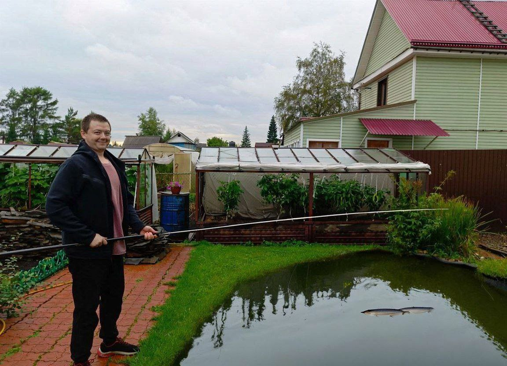
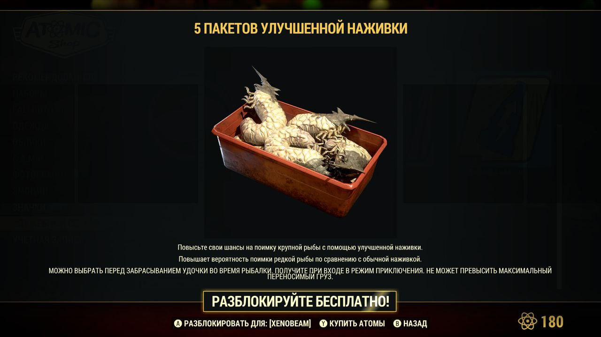
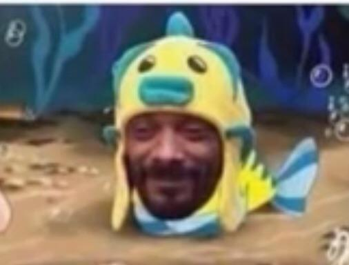
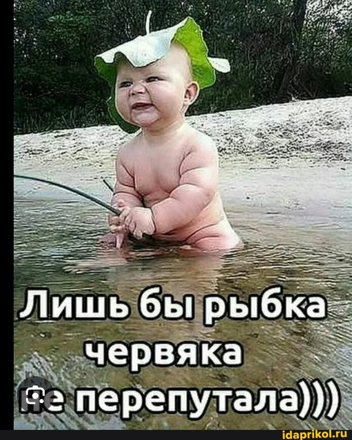
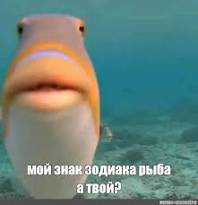
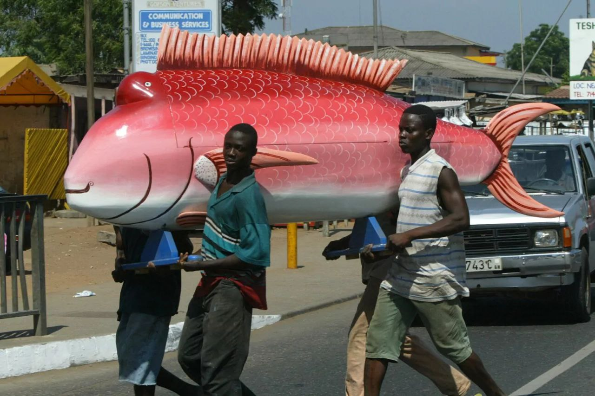
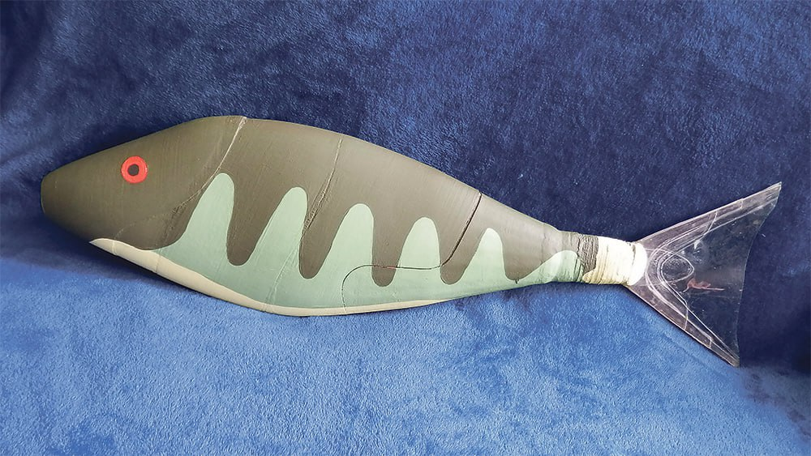
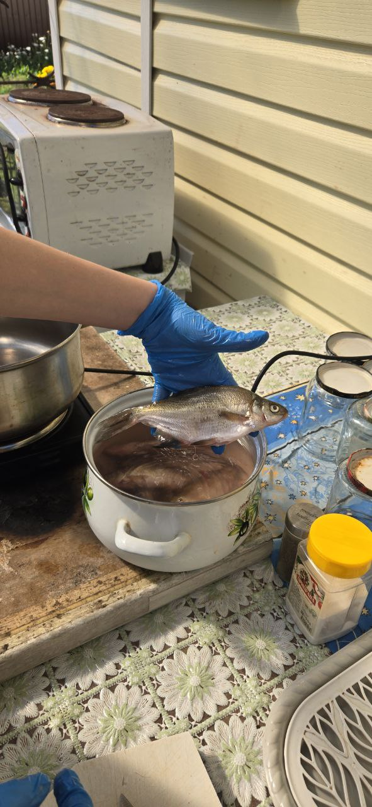
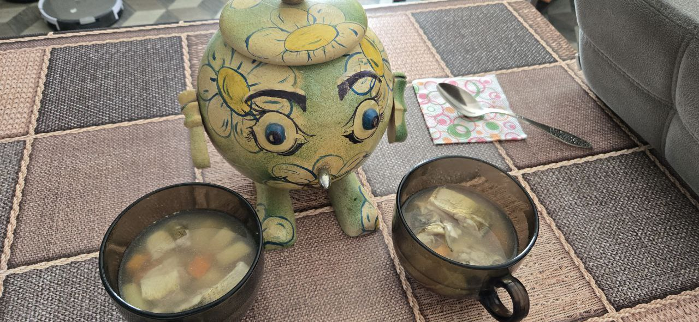

Рыболовный клуб "Мокрый карасик"
Рыболовный клуб "Мокрый карасик"


КЛЁВЫЕ НОВОСТИ
ЗАМЕАЧТЕЛЬНАЯ новость: ЧЛЕН ИВАН купил свою ПЕРВУЮ УДОЧКУ!!!!
ЧЛЕН клуба ИВАН купил свою первую УДОЧКУ. Ей стало ШЕСТИМЕТРОВОЕ маховое УДИЛИЩЕ!!!
ИВАН уже опробовал удочку и даже поймал ДВЕ крупные рыбы в пруду рядом со своим домом без использования ЛЕСКИ, крючка и ПОПЛАВКА!!
АЙ ДА ИВАН, АЙ ДА РЫБАК!!!!
Наш клуб желает ИВАНУ дальнеших рыболовецких успехов!!!!!
"Я так рад, вы себе не представляете ! Будто новую машину купил !" - отметил ИВАН
Делимся фотографией удилища шестиметрового члена ИВАНА!

ИВАН уже опробовал удочку и даже поймал ДВЕ крупные рыбы в пруду рядом со своим домом без использования ЛЕСКИ, крючка и ПОПЛАВКА!!
АЙ ДА ИВАН, АЙ ДА РЫБАК!!!!
Наш клуб желает ИВАНУ дальнеших рыболовецких успехов!!!!!
"Я так рад, вы себе не представляете ! Будто новую машину купил !" - отметил ИВАН
Делимся фотографией удилища шестиметрового члена ИВАНА!
Автор: Алексей М. 30.08.2025
АКЦИЯ для рыболовов: выуживать морских обитателей в цифровом мире еще никогда не было так легко!
В прорывной видеоигре Fallout 76 абсолютно ЛЮБОЙ ЖЕЛАЮЩИЙ может получить БЕСПЛАТНО 5 ПАКЕТОВ УЛУЧШЕННОЙ
НАЖИВКИ.
— Повысьте свои шансы на поимку крупной рыбы с помощью улучшенной наживки.
— Увеличьте вероятность поимки редкой рыбы по сравнению с обычной наживкой.
— МОЖНО ВЫБРАТЬ ПЕРЕД ЗАБРАСЫВАНИЕМ УДОЧКИ.
Делимся фотографией красавцев-опарышей!
Новость создана при поддержке компании Bethesda. ОГРН ЮРЛ ВАВЫА ОПРЛАДПОЛДВОПЛД ВЫАЫВАОДЛ ООО НДФЛ ЦУПИС.

— Повысьте свои шансы на поимку крупной рыбы с помощью улучшенной наживки.
— Увеличьте вероятность поимки редкой рыбы по сравнению с обычной наживкой.
— МОЖНО ВЫБРАТЬ ПЕРЕД ЗАБРАСЫВАНИЕМ УДОЧКИ.
Делимся фотографией красавцев-опарышей!
Новость создана при поддержке компании Bethesda. ОГРН ЮРЛ ВАВЫА ОПРЛАДПОЛДВОПЛД ВЫАЫВАОДЛ ООО НДФЛ ЦУПИС.
Автор: Андрей Б. 27.08.2025
РЫБЫ в массовой культуре: «Южный парк» и fish dicks
Дорогие друзья, запускаем новую рубрику — будем рассказывать про самые яркие и впечатляющие появления
морских обитателей в кино, играх и книгах. Сегодня — про пятый эпизод 13 сезона мультсериала «Южный
парк».
По сюжету герой мультика Джимми придумывает самую смешную шутку в мире, которая основывается на каламбуре «fishsticks» — «рыбные палочки», «fish dicks» — «рыбьи п*нисы». («Вам нравятся рыбные палочки? И вы любите брать их в рот?»).
Лишь один рэпер Канье Уэст не понимает новую шутку, более того, он болезненно воспринимает его сравнение с гей рыбой.
После музыкант прокомментировал свое появление в мультсериале. «South Park просто убил меня прошлой ночью, я долго смеялся. Конечно, пародия на меня задела мои чувства, но чего ещё можно было ожидать от South Park’a?! Он немного уязвил моё самолюбие».

По сюжету герой мультика Джимми придумывает самую смешную шутку в мире, которая основывается на каламбуре «fishsticks» — «рыбные палочки», «fish dicks» — «рыбьи п*нисы». («Вам нравятся рыбные палочки? И вы любите брать их в рот?»).
Лишь один рэпер Канье Уэст не понимает новую шутку, более того, он болезненно воспринимает его сравнение с гей рыбой.
После музыкант прокомментировал свое появление в мультсериале. «South Park просто убил меня прошлой ночью, я долго смеялся. Конечно, пародия на меня задела мои чувства, но чего ещё можно было ожидать от South Park’a?! Он немного уязвил моё самолюбие».
Автор: Андрей Б. 26.08.2025
ШОК: черви совершили побег в холодильнике
Подробностями с места событий делится корреспондент Андрей Блинов:
«Обычно мы с Аней заворачиваем червей в несколько пакетов во избежание побега, но в этот раз что-то пошло не так. Уже и на рыбалку съездили, и от червей избавились, но вчера я открываю дверь холодильника и обнаруживаю двух особей.
Первая свернулась калачиком и, по всей видимости, была мертва. Вторая — дрыгалась. Не повторяйте наших ошибок — НАДЕЖНО ХРАНИТЕ СВОИХ ЧЕРВЕЙ».

«Обычно мы с Аней заворачиваем червей в несколько пакетов во избежание побега, но в этот раз что-то пошло не так. Уже и на рыбалку съездили, и от червей избавились, но вчера я открываю дверь холодильника и обнаруживаю двух особей.
Первая свернулась калачиком и, по всей видимости, была мертва. Вторая — дрыгалась. Не повторяйте наших ошибок — НАДЕЖНО ХРАНИТЕ СВОИХ ЧЕРВЕЙ».
Автор: Андрей Б. 26.08.2025
Что ждет РЫБ после НОВОЛУНИЯ?!?
23 августа «небесная канцелярия» затеяла «не просто перезагрузку, а тотальный аудит», предупреждает
новостной портал «Ирсити»! Виновница — Дева, которая выходит на сцену вместе с новолунием.
Итак, вот что она сулит счастливчикам, родившимся под знаком РЫБЫ: новолуние заставит обратить ваше внимание на сферу личных и деловых отношений. ЧЕСТНОСТЬ и ОТКРЫТЫЙ ДИАЛОГ помогут укрепить связи как с коллегами, так и с любимым человеком.
"Опа" - комментарий члена ИВАНА

Итак, вот что она сулит счастливчикам, родившимся под знаком РЫБЫ: новолуние заставит обратить ваше внимание на сферу личных и деловых отношений. ЧЕСТНОСТЬ и ОТКРЫТЫЙ ДИАЛОГ помогут укрепить связи как с коллегами, так и с любимым человеком.
"Опа" - комментарий члена ИВАНА
Автор: Андрей Б. 25.08.2025
Фото ДНЯ: последний путь РЫБАКА из солнечной АФРИКИ
Снимок сделали в Гане, где похороны — это большой праздник. Гробы здесь — главный символ церемонии,
отражающий жизнь умершего.
Традиция стала частью национальной и мировой культуры.

Традиция стала частью национальной и мировой культуры.
Автор: Андрей Б. 25.08.2025
ОЧУМЕЛЫЕ ручки: российская роборыба с акустическим управлением подберется к морской фауне поближе!
Великие инженеры из Самары создали роборыбу, которая может передвигаться на глубине до 18 метров,
двигая хвостом подобно настоящим рыбам.
Управлять роботом можно при помощи акустических сигналов. Разработчики уже протестировали устройство на коралловом рифе и убедились — настоящие рыбы НЕ БОЯТСЯ ЕГО.
Делимся фотографией чудесного изобретения:

Управлять роботом можно при помощи акустических сигналов. Разработчики уже протестировали устройство на коралловом рифе и убедились — настоящие рыбы НЕ БОЯТСЯ ЕГО.
Делимся фотографией чудесного изобретения:
Автор: Андрей Б. 25.08.2025
Рыбак, будь ОСТОРОЖЕН 🚩🚩🚩
ПОЯВИЛАСЬ ДОСТОВЕРНАЯ ИНФОРМАЦИЯ О ГЛУБОКОВОДНЫХ
Глубоководные — это раса разумных морских существ, приблизительно похожей формы с человеком, но с рыбьей внешностью. Они известны племенам островитян, которые отрезаны от остального человечества. Некоторые из них имеют более человеческий облик, благодаря чему регулярно вступают в связь с людьми, создавая детей гибридов.
Ни В КОЕМ случае не вступайте в связь!
Глубоководные — это раса разумных морских существ, приблизительно похожей формы с человеком, но с рыбьей внешностью. Они известны племенам островитян, которые отрезаны от остального человечества. Некоторые из них имеют более человеческий облик, благодаря чему регулярно вступают в связь с людьми, создавая детей гибридов.
Ни В КОЕМ случае не вступайте в связь!

Автор: Андрей Б. 24.08.2025
Ах ухи НАВАРИЛИ!!
Члены клуба "МОКРЫЙ КАРАСИК" Юлия и ИВАН сварили потрясающую душистую речную уху из обитателей
залива на
17-м километре.
"Вкусно" - сообщили ИВАН и Юлия.


"Вкусно" - сообщили ИВАН и Юлия.
Автор: Алексей М. 24.08.2025